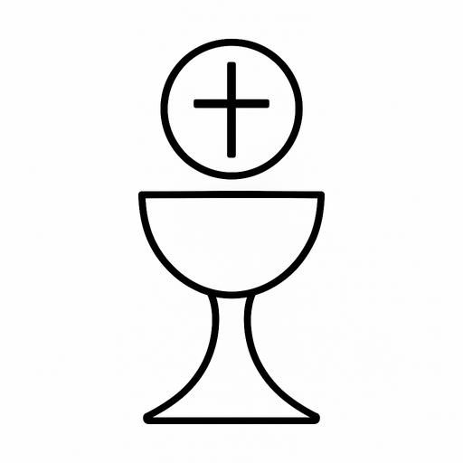
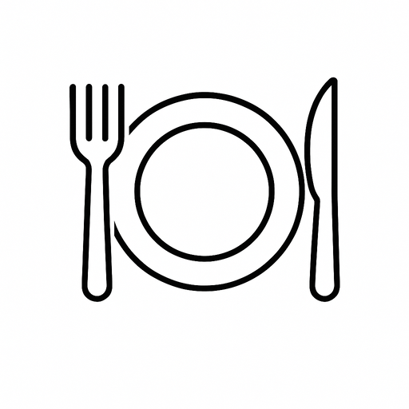

Outils
De petits outils pratiques, gratuits et sans inscription.
Liturgie du jour

Lectures de la messe, temps liturgique et couleur du jour.
Calendrier de l'Avent
Un geste et une intention par jour jusqu'à Noël.
Cuisiner pour la tablée

Recettes pour 50, 60 ou 70 personnes, liste de courses et budget.
Dans votre agenda
Ajoutez une activité à votre agenda ou abonnez-vous à toutes.